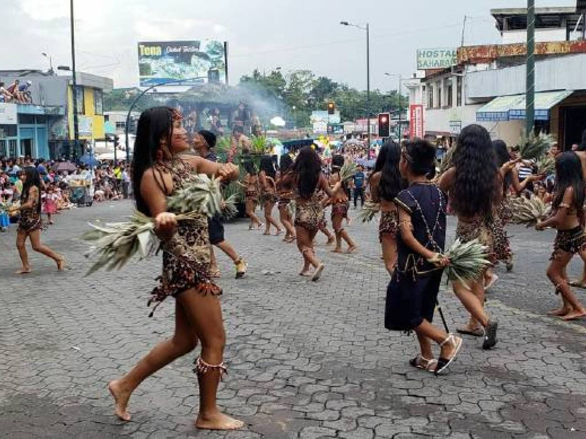

Tena es un lugar donde convergen tradiciones indígenas, mestizas y la vibrante cultura amazónica
- Inty Raymi
Celebrado en Junio por las comunidades Kichwas Incluye danzas musica con flautas y tambores y
rituales de agradecimiento a la Pachamama
- Carnaval Amazónico
En Febrero/Marzo,con desfiles, comparsas,juegos con agua y espuma, y elecion de la reina de Tena
- Fiesta de la Chonta
En Mayo/Junio ,comunidades indigenas celebran con danzas, chicha y platos hechos con frutos de Chonta
